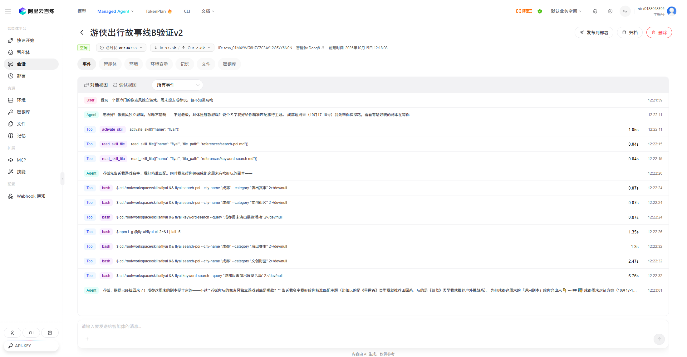
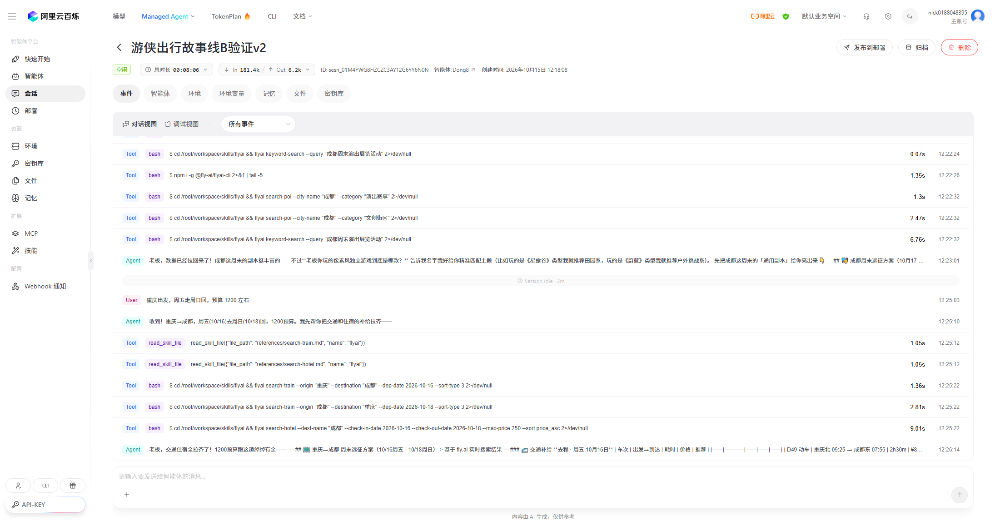
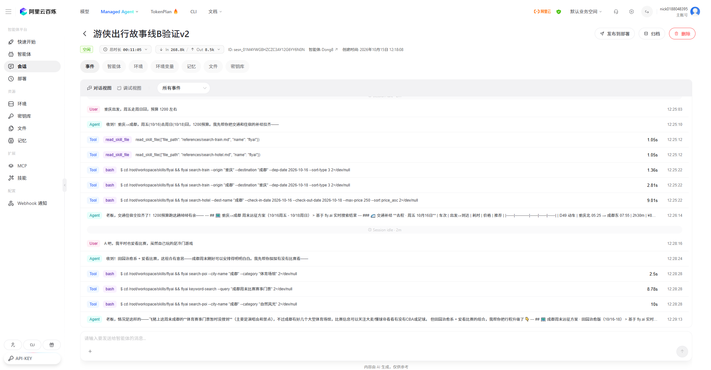
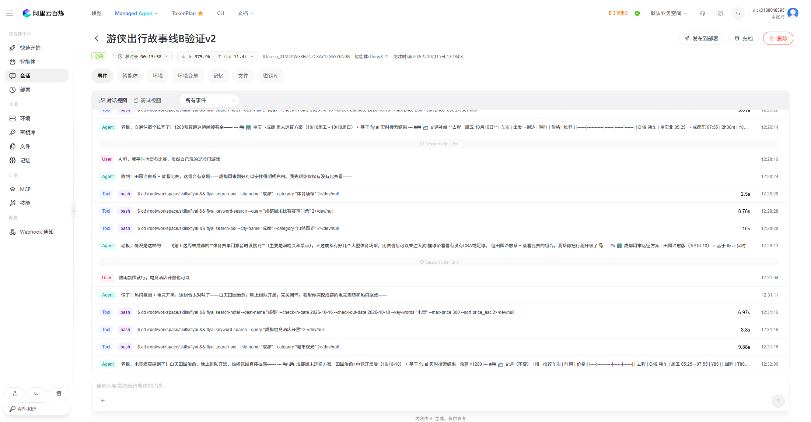
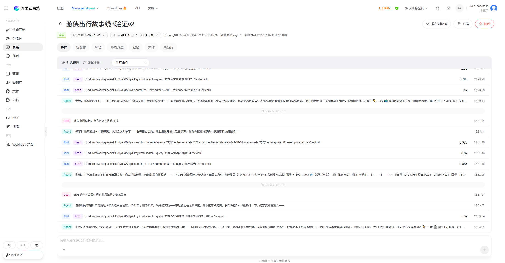
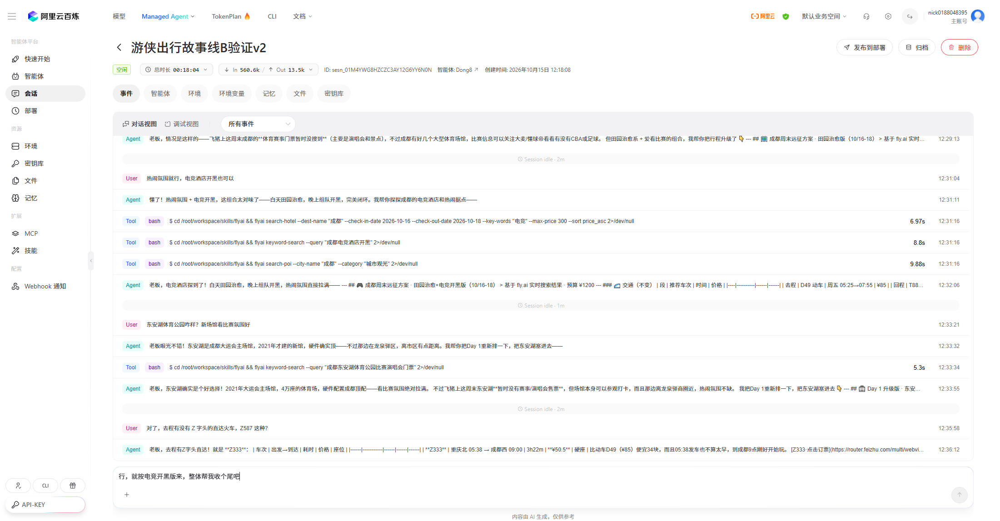
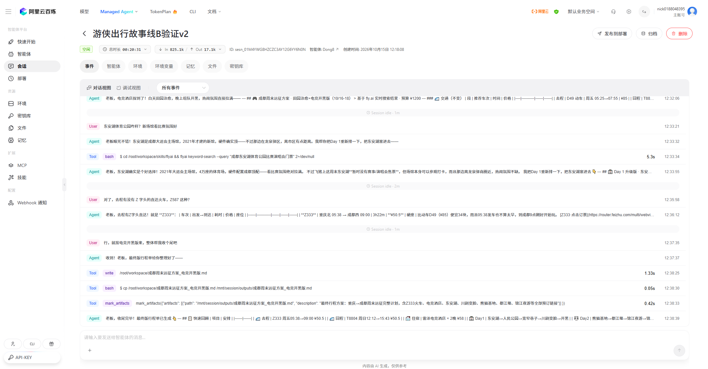

游侠出行按玩家真正在玩的游戏（LOL / 原神 / 黑神话 / CS2 / 小众独立游戏）理解体验偏好， 再结合飞猪真实供给，产出带真实价格和预订链接的可执行旅程—— 而不是一份谁都能拿到的通用攻略。
查询器是纯前端的知识库映射层，不需要 Key、不调用模型；完整的智能体（会查飞猪实时数据）见逐幕记录。
游戏是最诚实的兴趣标签——它是行为，不是自述。
一个在《黑神话：悟空》里泡了 300 小时的玩家，和一个在《星露谷物语》里泡了 300 小时的玩家， 想从旅行里获得的东西完全不同——前者要古建朝圣的震撼，后者要田园治愈的松弛。
但现有旅行 AI 给两个人的答案，大概率是同一份「XX 市必去十大景点」。 一个人在游戏里愿意花时间做什么，直接暴露了他真实的体验偏好； 这个信号比「你平时喜欢什么类型的目的地」可靠得多，因为它是行为，不是自述。
同一个问题，两种处理方式。这是实测结果，不是设想。
search-train 给出真实车次：D49 ¥85 / Z333 ¥50.5 / T8804 ¥50.5search-hotel 给出真实房价：雷泽电竞酒店 ¥29/晚、758 电竞酒店 ¥55/晚本项目不是提示词堆砌，是一份可扩展的知识工程。覆盖 5 大类目、30 款游戏、20 行映射。
第二级的关键词来自玩家实际怎么描述自己的游戏——「像素风」「剧情很好」「喜欢种田」「喜欢建造」， 而不是从游戏分类学里推导的「Roguelike」「Metroidvania」。 面向用户的分类体系，要用用户的语言，不是行业的语言。
右侧那条硬约束是本项目主动设的：知识库不允许映射到飞猪查不到的地方。 这保证产出的每一条推荐都是「可预订的」，而不是「灵感建议」。
在线查询器可以输入任意游戏名，实时看到三级匹配的完整过程——命中的是哪一级、为什么走兜底、兜底给了什么方向。 纯前端运行，不需要 Key，不调用模型。
把「体验意图理解」做成可复现的流程，而不是靠模型随机发挥。
故事线 B 强化版：小众像素风玩家 · 重庆 → 成都 · 周末电竞开黑之旅。以下为真实百炼 Dong8 会话截图。







所有数据均通过工具调用链路获得，非模型编造。逐条可核对。
| 验证点 | 结果 | 证据 |
|---|---|---|
| 成都电竞酒店 | 真实 | 雷泽电竞酒店 ¥29/晚、758 电竞酒店 ¥55/晚、星空穿梭国际青年酒店 ¥10/晚 |
| 东安湖体育公园 | 真实 | 2021 大运会主场馆、4 万座、龙泉驿区、地铁 2 号线 + 公交 876 路可达 |
| Z 字头火车 | 真实（含修正） | 去程 Z333（¥50.5）、回程 Z588（¥50.5）；智能体主动纠正「Z587 方向反了」 |
| 无赛事兜底 | 真实 | 第 2 / 5 幕 keyword-search 返回飞猪本周末成都 / 东安湖无体育赛事门票 |
| 车次价格 | 真实 | D49 ¥85、Z333 ¥50.5、T8804 ¥50.5，均为 status:0 级真实票价 |
| 预订链接 | 真实 | 返回 router.feizhu.com 真实飞猪跳转链接 |
模型负责理解、编排、解释；飞猪负责事实；用户负责决策与支付。三者不越界。
| 环节 | 由谁负责 | 说明 |
|---|---|---|
| 意图识别 | 模型 | 抽取游戏名 / 类型 / 偏好风格 / 出行三要素 |
| 知识检索 | 模型 + 知识库 | 模型执行匹配动作，映射关系由知识库提供，不得自行发明映射 |
| 需求补全 | 模型 | 缺失信息必须追问，不猜 |
| 工具编排 | 模型 | 决定调用哪些 flyai 命令、什么参数、什么顺序 |
| 数据真伪 | 工具（飞猪） | 价格 / 场次 / 车次 / 链接一律以工具返回为准，模型不得估算或补写 |
| 推荐逻辑解释 | 模型 | 解释「为什么推荐 A 而非 B」，这是模型的价值所在 |
| 失败兜底 | 模型 + 提示词约束 | 工具返回为空时必须走三套预案，禁止编造 |
| 下单支付 | 用户 | 智能体只提供跳转链接，不代下单、不代支付 |
主动说明边界，比假装全能更可靠。
目前精确映射 30 款游戏（20 行映射）+ 8 类风格兜底。市面游戏数以万计，未收录的游戏会走第二 / 三级兜底，兜底结果的相关性必然低于精确映射。
扩展规则要求「映射目的地必须能被 flyai 查到真实数据」，这保证了可预订性，但也意味着飞猪供给薄弱的城市，即使旅行体验很契合，也不会被映射进去。
页面展示的均为查询当时的快照，最终以飞猪预订页为准。演示中的「本周末无成都体育赛事」是 2026-10-15 的真实返回，换个周末可能就有赛事。
只提供飞猪跳转链接，下单支付由用户在飞猪 App 完成。不做实时余票锁定，「有票」仅代表查询时刻的状态。
复现方式是在百炼控制台创建智能体并注入 FLYAI_API_KEY。本页与仓库截图 / 验证报告是永久留存证据；百炼会话受状态机管理，归档后为 terminated 终态、不能再交互。
真实数据链路的正确性靠人工对话验证 + 逐条核对工具返回来保证，而非单元测试。这是明确认知的短板。